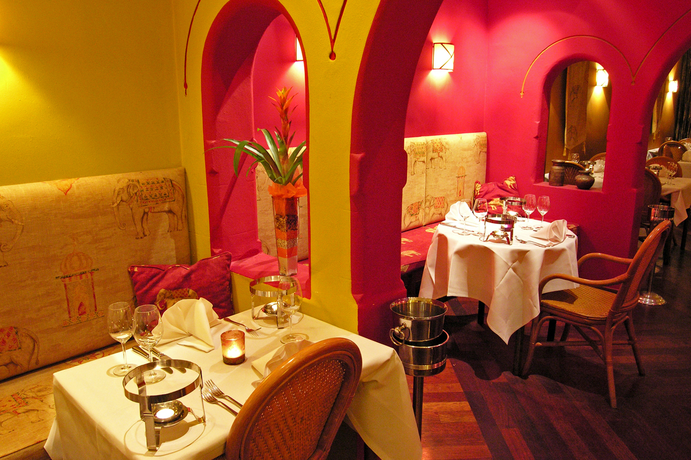
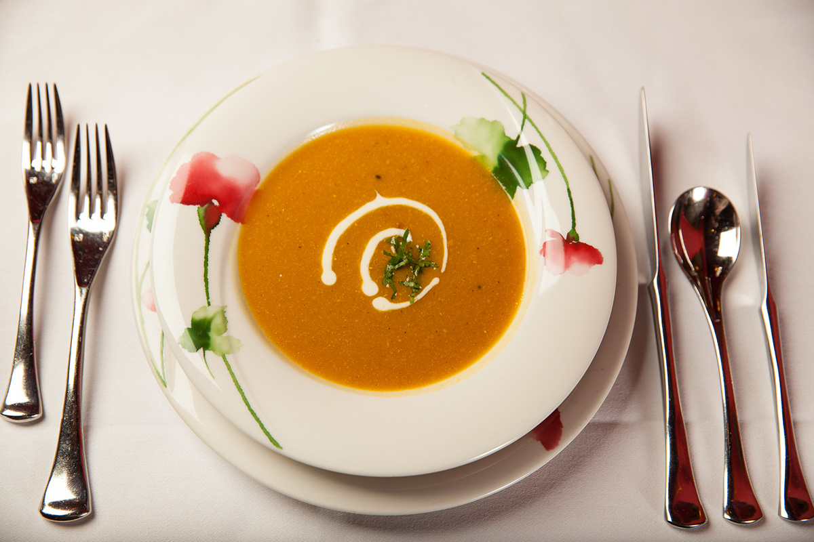

Verse authentieke Indiase maaltijden
Welkom in een Indiase ervaring in de Maharani. Ervaar traditionele Indiase gastvrijheid en authentiek Indiaas eten, gemaakt naar recepten uit een lange familietraditie van creatief thuiskoken. Geniet van verse natuurlijke ingrediënten en de fijnste masala's, die de gerechten zo rijk maken aan smaak en aroma.
De Maharani werd opgericht in 1982 en ligt in het hart van de stad aan het Noordeinde, op een steenworp afstand van het Koninklijk Paleis. Wij brengen meer dan 40 jaar ervaring in het leveren van een consistent hoge kwaliteit. Onze Indiase keuken heeft het respect van veel van onze gewaardeerde gasten verdiend.
Het is onze voortdurende inspanning om het onze gasten comfortabel te maken. Kies uit curry's, tandoori-gerechten en vegetarische gerechten, met Indiaas brood en Indiase desserts. In de Maharani nodigen wij u uit weg te zinken in de sensatie van Indiaas dineren.
- 1982
- opgericht aan het Noordeinde
- 40+
- jaar ervaring
- 7 dagen
- per week open

